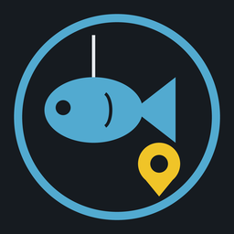

Dein Angeltagebuch für Russian Fishing 4
Your fishing diary for Russian Fishing 4
In Mein Fangbuch auf ＋ Eigenen Spot klicken. Ein Assistent führt dich durch sechs Schritte.
Im Spiel einfach F12 drücken. Das Tool holt neue Screenshots selbst aus dem Ordner Dokumente\Russian Fishing 4\Screenshots und sagt dir, welches Bild als Nächstes fehlt.
Gewässer und Koordinaten. Beim Grundangeln ist der Clip Pflicht.
Zielfisch, Angelart und Temperatur. An manchen Gewässern wie dem Kupfersee ist die Temperatur Pflicht, bei Pose, Match und Bolognese die Tiefe.
Bis zu drei Montagen, falls du verschiedene Ruten im Wasser hast.
Rezept auswählen oder neu anlegen. Bei jedem Zusatz kannst du gemahlen anhaken. Wer nicht anfüttert, klickt Ich füttere nicht an.
Name und Notiz. Angelzeit, Anzahl der Fische und dein bester Fang stehen schon drin.
Geteilte Spots erscheinen bei allen unter Aktive Spots, mit Name, Flagge und allen Bildern. Fische, Köder und Futter sieht jeder in seiner eingestellten Sprache. Spots mit Nalathan (Admin) habe ich selbst geangelt.
Zahnrad oben rechts, Einstellungen, Abschnitt Spots teilen, dann Freischaltung beantragen. Das Tool erzeugt deinen persönlichen Schlüssel und öffnet ein GitHub Formular. Du brauchst dafür ein kostenloses GitHub Konto.
Anzeigename und Land eintragen und abschicken. Alles im Formular ist öffentlich sichtbar, dein Schlüssel bleibt aber auf deinem PC.
Sobald ich dich freigeschaltet habe, antworte ich im Formular. Dann in den Einstellungen auf Prüfen und speichern klicken. Bei deinen eigenen Spots steht jetzt Teilen.
Teile bitte nur Spots, die du selbst geangelt hast, mit eigenen Screenshots.
Unter Einstellungen, Daten sichern legt Exportieren eine Datei mit Fangbuch, Spots, Rezepten, Bildern und Einstellungen in deinen Downloads Ordner. Auf einem neuen PC oder Zweitgerät holst du mit Importieren alles zurück, vorhandene Einträge bleiben erhalten. Die Datei enthält auch deinen Schlüssel zum Teilen, gib sie also nicht weiter.
Funktioniert etwas nicht oder wird ein Bild falsch erkannt? Melde es bitte auf GitHub oder schreib Nalathan auf Discord. Ein Screenshot vom betroffenen Bild hilft am meisten.
In My catch log click ＋ Own spot. A wizard takes you through six steps.
Just press F12 in the game. The tool picks up new screenshots from Documents\Russian Fishing 4\Screenshots by itself and tells you which image is still missing.
Waterbody and coordinates. Clip is required for bottom fishing.
Target fish, technique and temperature. On some waters like Copper Lake the temperature is required, for float, match and bolognese the depth.
Up to three rigs if you fish with different rods.
Pick a recipe or create a new one. Every additive can be marked as crushed. If you don't use groundbait, click I don't use groundbait.
Name and note. Fishing time, number of fish and your best catch are already filled in.
Shared spots show up for everyone in Active spots, with name, flag and all screenshots. Everyone sees fish, baits and groundbait in their own language. Spots marked Nalathan (Admin) were fished by me.
Gear at the top right, Settings, section Share spots, then Request access. The tool creates your personal key and opens a GitHub form. You need a free GitHub account for it.
Enter a display name and your country and submit. Everything in the form is public, but your key stays on your PC.
Once I have approved you, I reply in the form. Then click Check and save in the settings. Your own spots now have a Share button.
Please only share spots you fished yourself, with your own screenshots.
In Settings, Back up data, Export saves your catch log, spots, recipes, images and settings to one file in your Downloads folder. On a new PC or second device, Import brings everything back, existing entries are kept. The file also contains your sharing key, so don't pass it on.
Something not working, or an image read wrong? Please report it on GitHub or message Nalathan on Discord. A screenshot of the image in question helps most.